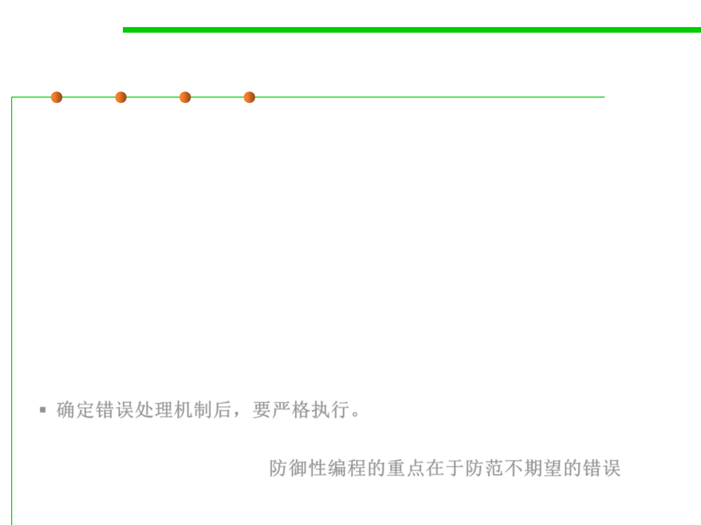

7.2 Error and Exception Handling
High-Level Design Implications of Error Processing
▪ E.g., if you decide to have high-level code handle errors and low-
level code merely report errors, make sure the high level code
actually handles the errors!
▪ Don’t ignore error information! Test the function return value. If
you don’t expect the function ever to produce an error, check it
anyway.
▪ Unless you’ve set an architectural guideline of not checking system
calls for errors, check for error codes after each call.
▪ If you detect an error, include the error number and the
description of the error.
▪ 确定错误处理机制后，要严格执行。
▪ The whole point of defensive programming is guarding against
errors you don’t expect. 防御性编程的重点在于防范不期望的错误。